Explorando O Java Http Client Uma Ferramenta Moderna Para Chamadas Http
{width="5.905555555555556in" height="3.3222222222222224in"}
Explorando o Java HTTP Client do Java 11+.
Explorando o Java HTTP Client: Uma Ferramenta Moderna para Chamadas HTTP
 {width="1.0416666666666667in" height="1.0416666666666667in"}
{width="1.0416666666666667in" height="1.0416666666666667in"}
Desenvolvedor Java Sênior na Develcode
21 de julho de 2024
Olá, desenvolvedores Java! Hoje, vamos mergulhar em um recurso poderoso introduzido no Java 11 - o Java HTTP Client. Esta API moderna e versátil supera as limitações da antiga HttpURLConnection, oferecendo uma interface mais intuitiva e fácil de usar.
O Java HTTP Client suporta HTTP/2 e WebSocket, além de permitir o envio de requisições síncronas e assíncronas. Ele pode lidar com diferentes tipos de corpo de requisição e resposta, como String, InputStream, File e diretamente para um Subscriber do java.util.concurrent.Flow. Além disso, ele também suporta a configuração de tempo limite de requisição, autenticação automática e redirecionamento.
Neste artigo, vamos explorar como usar o Java HTTP Client, desde a criação de uma instância até a configuração de várias opções, como timeout, proxy e autenticação. Também vamos aprender a fazer solicitações GET e POST, a analisar respostas e a lidar com diferentes códigos de status HTTP. Além disso, vamos discutir como testar suas chamadas HTTP e comparar o Java HTTP Client com outras bibliotecas populares.
Então, se você está procurando uma alternativa moderna e poderosa para fazer chamadas HTTP em comparação com a HttpURLConnection, continue lendo!
Aqui estão os tópicos mencionados no documento em ordem de apresentação:
-
Introdução ao Java HTTP Client.
-
Configuração do HttpClient.
-
Envio de Requisições GET.
-
Análise da Resposta.
-
Envio de Requisições POST.
-
Tratamento de Respostas.
-
Trabalhando com Headers.
-
Tratamento de Erros e Exceções.
-
AsyncHttpClient e Chamadas Assíncronas.
-
Testes Unitários para Clientes HTTP.
-
Comparação com Outras Bibliotecas.
Cada tópico aborda diferentes aspectos do Java HTTP Client, desde a introdução e configuração até o tratamento de erros e comparações com outras bibliotecas. Isso deve fornecer uma visão abrangente do Java HTTP Client para vocês.
Introdução ao Java HTTP Client:
O Java HTTP Client é uma API moderna e versátil introduzida no Java 11 para lidar com requisições HTTP. Ele supera as limitações da antiga HttpURLConnection ao oferecer uma API mais intuitiva e fácil de usar, com suporte para HTTP/2 e WebSocket, além de permitir o envio de requisições síncronas e assíncronas. A capacidade de lidar com diferentes tipos de corpo de requisição e resposta, como String, InputStream, File e diretamente para um Subscriber do java.util.concurrent.Flow, torna o Java HTTP Client uma escolha superior. Além disso, ele também suporta a configuração de tempo limite de requisição, autenticação automática e redirecionamento, o que o torna uma alternativa moderna e poderosa para fazer chamadas HTTP em comparação com a HttpURLConnection.
Para usar o Java HTTP Client, você precisa seguir alguns passos. Aqui está um exemplo simples de como fazer uma requisição GET:
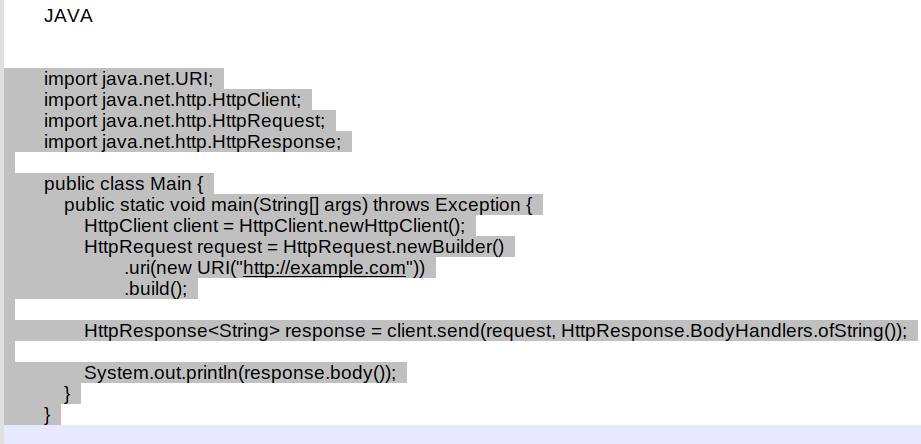{width="5.905555555555556in" height="2.8472222222222223in"}
Exemplo simples de como fazer uma requisição GET com Java HTTP Client.
Neste exemplo, primeiro criamos um HttpClient usando o método newHttpClient().
Em seguida, construímos uma requisição HTTP GET para "http://example.com" usando HttpRequest.newBuilder().
Finalmente, enviamos a requisição e obtemos a resposta como uma String usando client.send().
Este é um exemplo básico. O Java HTTP Client é muito mais poderoso e flexível, permitindo que você faça requisições POST, lidar com redirecionamentos, autenticação e muito mais.
Configuração do HttpClient:
Vamos abordar aqui um exemplo de como você pode criar uma instância de HttpClient e configurá-la com opções como timeout, proxy e autenticação em Java:
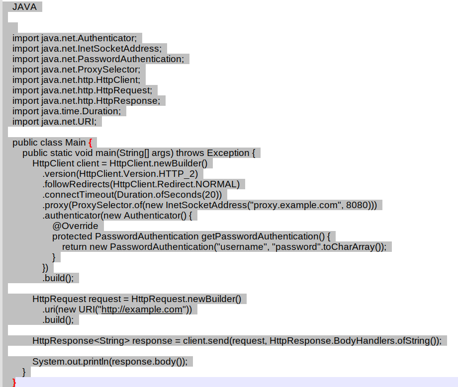{width="5.905555555555556in" height="4.995138888888889in"}
Exemplo de como criar uma instância de HttpClient.
Este código cria um HttpClient com as seguintes configurações:
-
Versão HTTP: HTTP/2
-
Redirecionamento: Normal
-
Timeout de conexão: 20 segundos
-
Proxy: proxy.example.com na porta 8080
-
Autenticação: Usuário "username" com senha "password"
Em seguida, ele cria uma HttpRequest para "http://example.com", envia a solicitação e imprime a resposta.
Por favor, substitua "proxy.example.com", "username", "password" e "http://example.com" pelos valores reais que você deseja usar.
Você pode configurar o timeout de leitura usando o método ofSeconds da classe Duration no HttpClient.
Aqui está um exemplo:
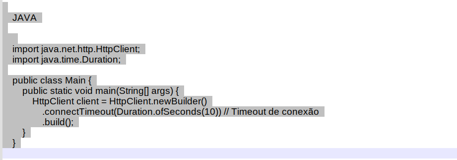{width="5.905555555555556in" height="2.064583333333333in"}
Exemplo de como criar uma instância de HttpClient com timeout.
Neste exemplo, o timeout de conexão é configurado para 10 segundos. Se a conexão não for estabelecida dentro deste período, uma exceção será lançada.
No entanto, a partir do Java 11, o HttpClient não fornece um método direto para configurar o timeout de leitura.
O timeout de leitura é geralmente manipulado no lado do servidor.
Se o servidor não enviar uma resposta dentro de um determinado período de tempo, ele fechará a conexão. Nesse caso, o HttpClient lançará uma exceção.
Se você precisar de um controle mais granular sobre o timeout de leitura, pode ser necessário usar uma biblioteca de terceiros que ofereça esse recurso, como o Apache HttpClient ou o OkHttp.
Envio de Requisições GET:
Como podemos fazer uma requisição HTTP GET usando o Java HTTP Client:
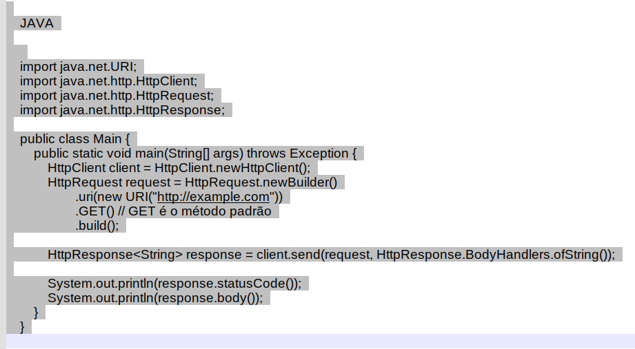{width="5.905555555555556in" height="3.2506944444444446in"}
Exemplo de requisição HTTP GET em código Java com a biblioteca Java HTTP Client.
Este exemplo, estamos criando um novo HttpClient e construindo uma solicitação HTTP GET para "http://example.com".
Em seguida, enviamos a solicitação e imprimimos o código de status e o corpo da resposta.
Lembre-se de substituir "http://example.com" pelo URL do seu destino.
Além disso, este é um exemplo simples e não inclui o tratamento de erros adequado que você deve incluir no código de produção.
Por exemplo, você pode querer adicionar um bloco try-catch para lidar com possíveis exceções.
Para analisar a resposta JSON e converter em objetos Java, você pode usar a biblioteca Jackson. Aqui está um exemplo de como você pode fazer isso:
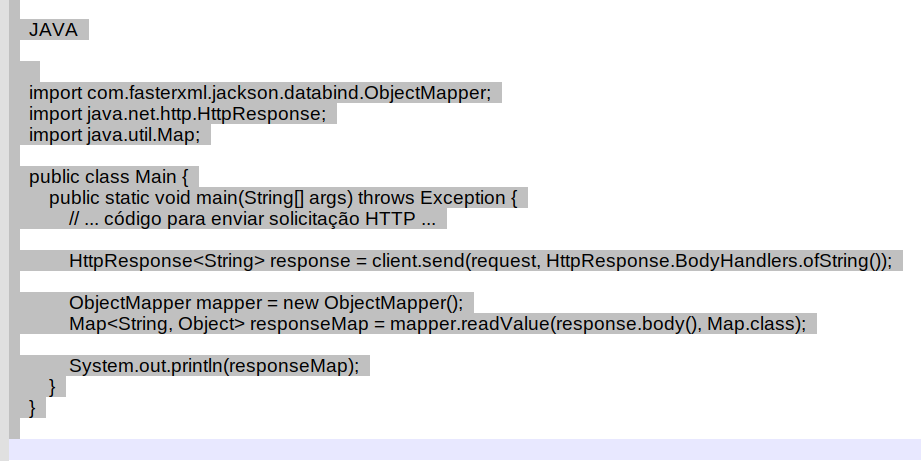{width="5.905555555555556in" height="2.95625in"}
Exemplo de uma requisição passando um objeto JSON com a bilbioteca Java HTTP Client.
Neste exemplo, estamos usando a biblioteca Jackson para converter a resposta JSON em um Map\<String, Object>. Primeiro, criamos um novo ObjectMapper, que é a classe principal da biblioteca Jackson. Em seguida, usamos o método readValue para converter a resposta JSON em um mapa.
Lembre-se de adicionar a dependência da biblioteca Jackson ao seu projeto.
Além disso, este é um exemplo simples e não inclui o tratamento de erros adequado que você deve incluir no código de produção.
Por exemplo, você pode querer adicionar um bloco try-catch para lidar com possíveis exceções.
Além disso, você pode querer criar classes de modelo para representar a estrutura do seu JSON, em vez de usar um mapa genérico.
Isso tornará seu código mais legível e seguro.
Como faço para converter JSON em objetos Java usando outras bibliotecas, como o Gson?
Você pode usar a biblioteca Java Gson, do Google, para converter JSON em objetos Java.
Aqui está um exemplo de como você pode fazer isso:
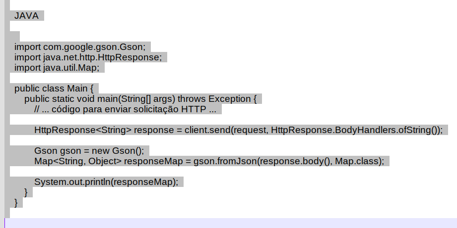{width="5.905555555555556in" height="2.95625in"}
Exemplo de código Java para conversão de JSON para um objeto Java.
Neste exemplo, estamos usando a biblioteca Gson para converter a resposta JSON em um Map\<String, Object>. Primeiro, criamos um novo objeto Gson. Em seguida, usamos o método fromJson para converter a resposta JSON em um mapa.
Lembre-se de adicionar a dependência da biblioteca Gson ao seu projeto.
Além disso, este é um exemplo simples e não inclui o tratamento de erros adequado que você deve incluir no código de produção. Por exemplo, você pode querer adicionar um bloco try-catch para lidar com possíveis exceções. Além disso, você pode querer criar classes de modelo para representar a estrutura do seu JSON, em vez de usar um mapa genérico. Isso tornará seu código mais legível e seguro.
Envio de Requisições POST:
Vamos demostrar um outro exemplo de como você pode preparar e enviar uma solicitação HTTP POST usando o Java HTTP Client:
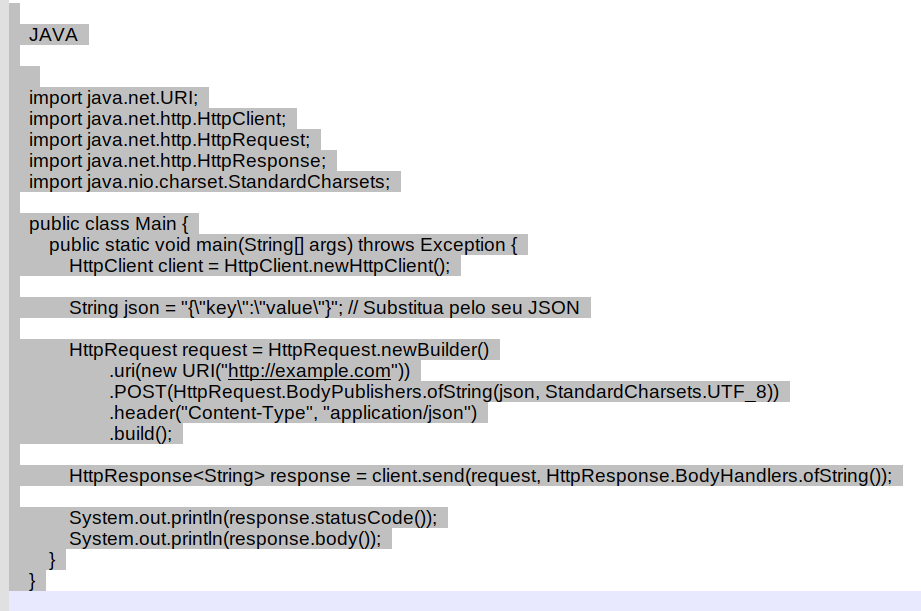{width="5.905555555555556in" height="3.9180555555555556in"}
Exemplo de requisição HTTP POST em código Java com a biblioteca Java HTTP Client.
Neste exemplo, estamos criando um novo HttpClient e construindo uma solicitação HTTP POST para "http://example.com". Estamos enviando um JSON como corpo da solicitação. Em seguida, enviamos a solicitação e imprimimos o código de status e o corpo da resposta.
Lembre-se de substituir "http://example.com" pelo URL do seu destino e \"{\\"key\\":\\"value\\"}\" pelo seu JSON. Além disso, este é um exemplo simples e não inclui o tratamento de erros adequado que você deve incluir no código de produção.
Por exemplo, você pode querer adicionar um bloco try-catch para lidar com possíveis exceções. Além disso, você pode querer adicionar mais cabeçalhos conforme necessário para a sua solicitação. Por exemplo, alguns servidores podem exigir um cabeçalho de autenticação.
Aqui está um exemplo de como você pode enviar dados no corpo de uma solicitação HTTP POST usando o Java HTTP Client. Vamos mostrar dois exemplos, um para enviar dados JSON e outro para enviar dados de formulário.
Exemplo 1: Enviando dados JSON
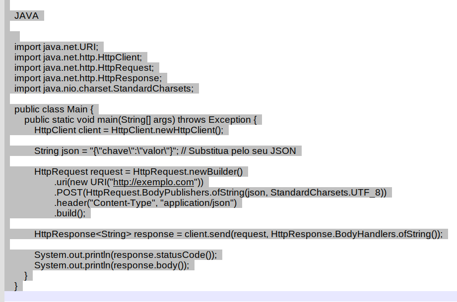{width="5.905555555555556in" height="3.911111111111111in"}
Exemplo de requisição HTTP POST em código Java com envio de dados JSON.
Exemplo 2: Enviando dados de formulário
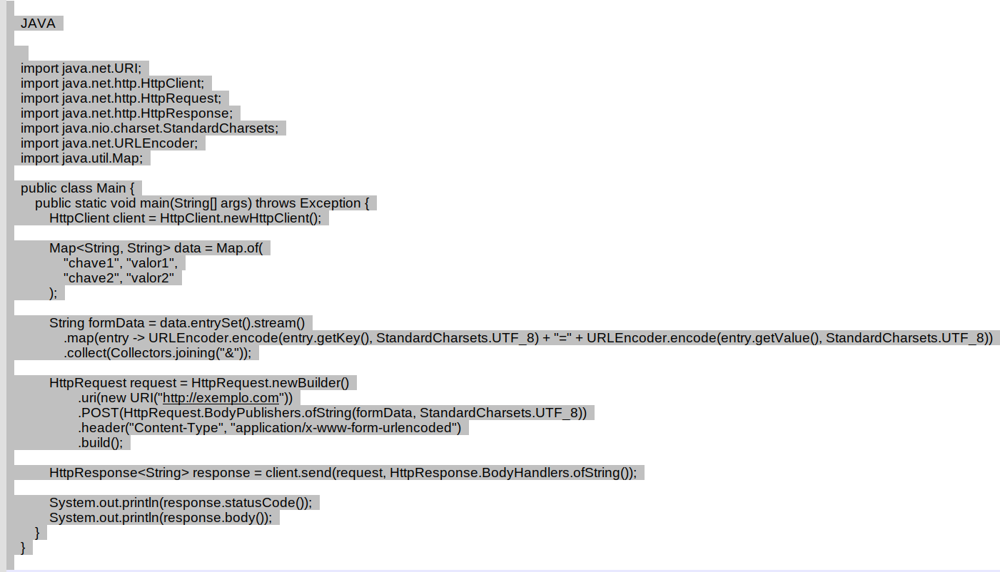{width="5.905555555555556in" height="3.3805555555555555in"}
Exemplo de requisição HTTP POST em código Java com envio de dados do formulário.
No primeiro exemplo, estamos enviando um JSON como corpo da solicitação.
No segundo exemplo, estamos enviando dados de formulário.
Para isso, codificamos cada par de chave-valor como chave=valor e juntamos todos os pares com & para formar a string do corpo da solicitação.
Lembre-se de substituir "http://exemplo.com" pelo URL do seu destino e os dados do formulário ou JSON pelos seus próprios dados. Além disso, estes são exemplos simples e não incluem o tratamento de erros adequado que você deve incluir no código de produção.
Por exemplo, você pode querer adicionar um bloco try-catch para lidar com possíveis exceções. Além disso, você pode querer adicionar mais cabeçalhos conforme necessário para a sua solicitação. Por exemplo, alguns servidores podem exigir um cabeçalho de autenticação.
Tratamento de Respostas, como lidar com diferentes códigos de status HTTP (200, 404, 500):
Aqui está um exemplo de como você pode lidar com diferentes códigos de status HTTP usando o Java HTTP Client:
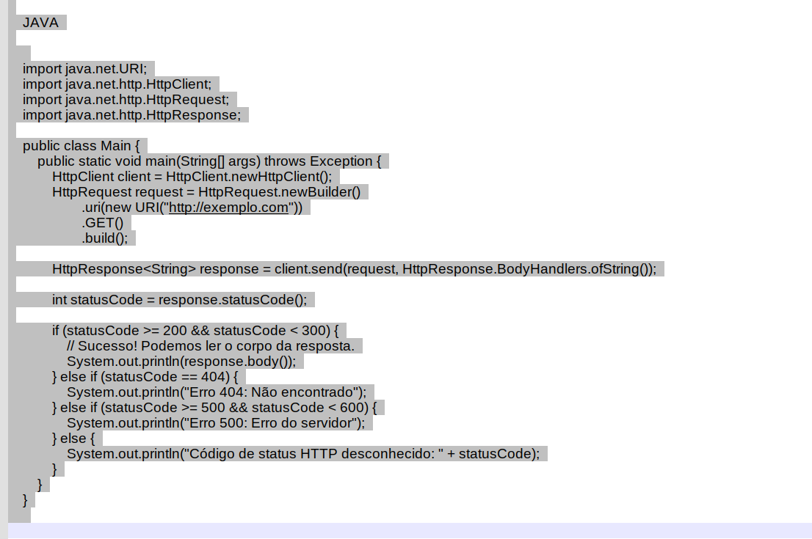{width="5.905555555555556in" height="3.9243055555555557in"}
Exemplo de código de requisição com Java HTTP Client com tratamento do status de resposta.
Neste exemplo, estamos verificando o código de status da resposta HTTP e lidando com diferentes códigos de status.
Se o código de status for entre 200 e 299, isso significa que a solicitação foi bem-sucedida e podemos ler o corpo da resposta.
Se o código de status for 404, isso significa que o recurso solicitado não foi encontrado.
Se o código de status for entre 500 e 599, isso significa que houve um erro no servidor.
Lembre-se de substituir "http://exemplo.com" pelo URL do seu destino.
Além disso, este é um exemplo simples e não inclui o tratamento de erros adequado que você deve incluir no código de produção.
Por exemplo, você pode querer adicionar um bloco try-catch para lidar com possíveis exceções. Além disso, você pode querer lidar com outros códigos de status HTTP conforme necessário para a sua aplicação. Em alguns servidores podem retornar um código de status 401 para solicitações não autenticadas. Nesse caso, você pode querer adicionar um caso para lidar com o código de status 401.Ao receber uma resposta HTTP, você pode processar a resposta de várias maneiras.
Se a resposta for bem-sucedida (código de status HTTP 200), você pode extrair informações do corpo da resposta. O corpo da resposta pode ser um JSON, XML ou outro formato de dados. Para extrair informações, você pode usar bibliotecas como Jackson ou Gson para converter a resposta em objetos Java. Por exemplo, se a resposta for um JSON, você pode converter o JSON em um Map\<String, Object> ou em uma classe de modelo Java que corresponda à estrutura do JSON. Isso permite que você acesse facilmente as informações na resposta.
Trabalhando com Headers:
Vamos mostrar aqui como adicionar, modificar e ler cabeçalhos HTTP em solicitações e respostas. Um exemplo de como você pode adicionar, modificar e ler cabeçalhos HTTP usando o HttpClient do Java.
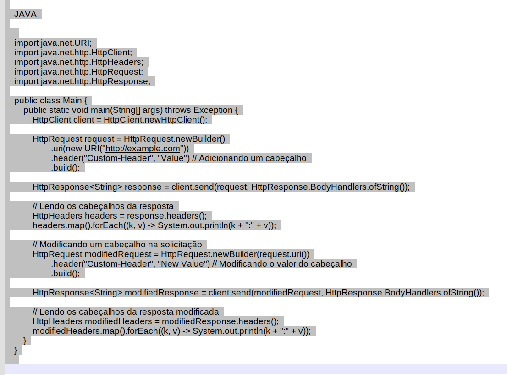{width="5.905555555555556in" height="4.378472222222222in"}
Exemplo de código de requisição com Java HTTP Client com modificação do cabeçalho HTTP.
Neste exemplo, primeiro criamos um HttpClient e uma HttpRequest. Adicionamos um cabeçalho personalizado à solicitação com o método .header(). Em seguida, enviamos a solicitação e obtemos a resposta. Para ler os cabeçalhos da resposta, usamos o método .headers() na resposta, que retorna um HttpHeaders. Em seguida, imprimimos todos os cabeçalhos. Para modificar um cabeçalho, criamos uma nova solicitação com o mesmo URI que a solicitação original, mas com um valor de cabeçalho diferente. Em seguida, enviamos a nova solicitação e lemos os cabeçalhos da nova resposta da mesma maneira.
Tratamento de Erros e Exceções:
Para o tratamento de erros e exceções, poderia explicar como tratar exceções relacionadas a conexões, timeouts e erros de servidor. Aqui está um exemplo de como você pode tratar exceções usando o HttpClient do Java.
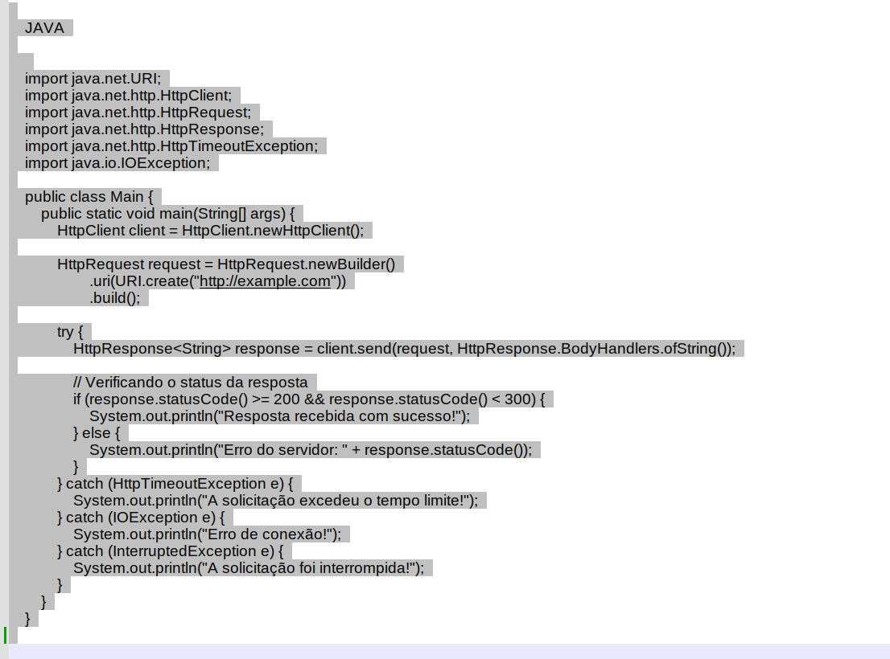{width="5.905555555555556in" height="4.378472222222222in"}
Exemplo de código de requisição com Java HTTP Client tratamento de erro try-catch.
Neste exemplo, primeiro criamos um HttpClient e uma HttpRequest. Em seguida, enviamos a solicitação dentro de um bloco try-catch.
Se a solicitação for bem-sucedida, verificamos o código de status da resposta. Se o código de status for entre 200 e 299, a solicitação foi bem-sucedida. Se o código de status for 300 ou superior, houve um erro no servidor.
Se ocorrer uma exceção durante o envio da solicitação, ela será capturada e tratada no bloco catch. Tratamos três tipos de exceções neste exemplo:
-
HttpTimeoutException: Esta exceção é lançada quando a solicitação excede o tempo limite.
-
IOException: Esta exceção é lançada quando ocorre um erro de conexão.
-
InterruptedException: Esta exceção é lançada quando a solicitação é interrompida.
Cada tipo de exceção é tratado de maneira diferente, imprimindo uma mensagem de erro apropriada. Você pode personalizar o tratamento de exceções para atender às suas necessidades específicas. Por exemplo, você pode tentar enviar a solicitação novamente se ela exceder o tempo limite, ou você pode registrar o erro de conexão para análise posterior.
AsyncHttpClient e Chamadas Assíncronas:
O Java HTTP Client suporta tanto chamadas síncronas quanto assíncronas. As chamadas síncronas são bloqueantes, o que significa que o thread que faz a chamada é bloqueado até que a resposta seja recebida. As chamadas assíncronas, por outro lado, são não bloqueantes. Elas retornam imediatamente com um CompletableFuture, que pode ser usado para processar a resposta quando ela estiver disponível.
Aqui está um exemplo de como você pode fazer uma chamada assíncrona com o HttpClient:
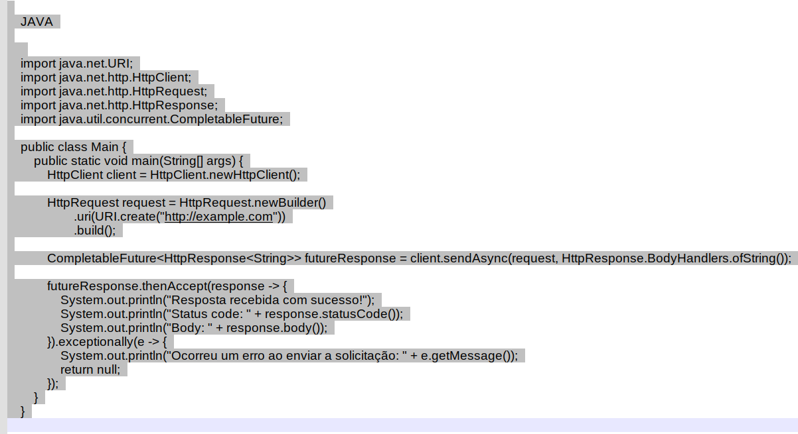{width="5.905555555555556in" height="3.2180555555555554in"}
Exemplo de código de requisição com Java HTTP Client com chamada assíncrona.
Neste exemplo, usamos o método sendAsync() para enviar a solicitação, que retorna um CompletableFuture. Usamos o método thenAccept() no CompletableFuture para processar a resposta quando ela estiver disponível.
Se ocorrer um erro ao enviar a solicitação, ele será tratado no bloco exceptionally().
Os benefícios das chamadas assíncronas incluem:
-
Não bloqueantes: As chamadas assíncronas são não bloqueantes, o que significa que seu aplicativo pode continuar fazendo outras coisas enquanto espera pela resposta.
-
Eficiência de recursos: As chamadas assíncronas podem ser mais eficientes em termos de recursos, especialmente se seu aplicativo precisa fazer muitas solicitações de rede, pois elas podem ser feitas em paralelo.
-
Melhor desempenho: Em muitos casos, as chamadas assíncronas podem melhorar o desempenho do seu aplicativo, pois elas permitem que seu aplicativo faça um melhor uso dos recursos do sistema.
No entanto, as chamadas assíncronas também podem ser mais complexas de implementar e depurar do que as chamadas síncronas, pois você precisa lidar com chamadas assíncronas \"futures\" e possivelmente com concorrência. Portanto, é importante entender bem esses conceitos antes de decidir usar chamadas assíncronas.
Testes Unitários para Clientes HTTP:
Vamos abordar como testar suas chamadas HTTP usando bibliotecas como JUnit e Mockito. Aqui está um exemplo de como você pode testar suas chamadas HTTP usando JUnit e Mockito.
Primeiro, você precisará adicionar as dependências do JUnit e Mockito ao seu arquivo pom.xml se estiver usando Maven:
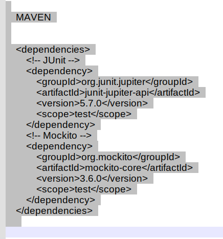{width="4.541666666666667in" height="4.864583333333333in"}
Dependências do JUnit e Mockito no Maven.
Aqui está um exemplo de teste unitário para uma classe que faz uma chamada HTTP:
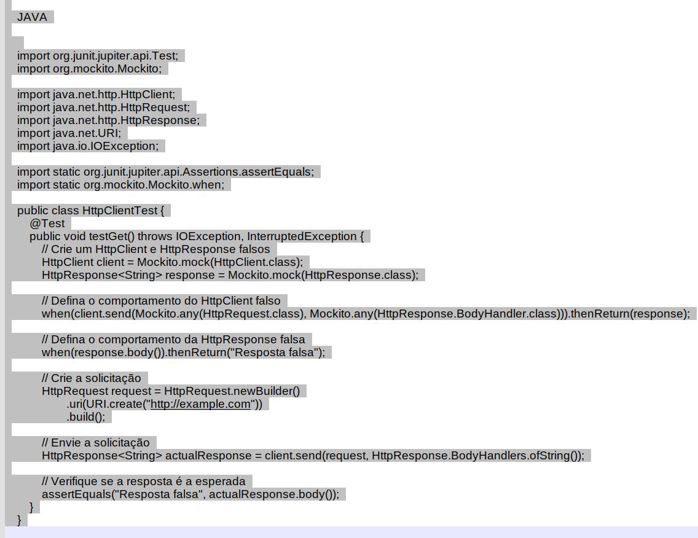{width="5.905555555555556in" height="4.554166666666666in"}
Exemplo de teste unitário com código aplicando a biblioteca Java HTTP Client.
Neste exemplo, criamos um HttpClient e HttpResponse falsos usando Mockito.mock(). Em seguida, definimos o comportamento do HttpClient falso para retornar a HttpResponse falsa quando o método send() é chamado. Definimos o comportamento da HttpResponse falsa para retornar uma string fixa quando o método body() é chamado.
Em seguida, criamos uma HttpRequest e usamos o HttpClient falso para enviá-la. Verificamos se a resposta é a esperada usando assertEquals().
Este é um exemplo simples, mas você pode criar testes mais complexos dependendo das suas necessidades. Por exemplo, você pode verificar se o método send() foi chamado com os parâmetros corretos, ou você pode testar como seu código lida com diferentes códigos de status de resposta.
Comparação com Outras Bibliotecas:
Em comparação do Java HTTP Client com outras bibliotecas populares como Apache HttpClient, OkHttp e Retrofit:
-
Java HTTP Client: A partir do Java 11, o Java HTTP Client tornou-se parte da biblioteca padrão do Java (java.net.http). Ele suporta HTTP/1.1 e HTTP/2, bem como comunicação WebSocket. Ele também suporta chamadas síncronas e assíncronas, o que é uma grande vantagem. Além disso, por ser parte da biblioteca padrão do Java, não requer dependências adicionais, o que pode simplificar o gerenciamento de dependências.
-
Apache HttpClient: O Apache HttpClient existe há muito tempo e é uma biblioteca madura e rica em recursos. Ele suporta HTTP/1.1, mas não suporta HTTP/2 ou WebSocket. Ele também não suporta chamadas assíncronas fora da caixa, embora exista uma biblioteca separada (HttpAsyncClient) que adiciona esse suporte. Uma vantagem do Apache HttpClient é que ele oferece um controle muito granular sobre a configuração da conexão e do protocolo.
-
OkHttp: O OkHttp é uma biblioteca moderna que suporta HTTP/2 e WebSocket, além de HTTP/1.1. Ele também suporta chamadas síncronas e assíncronas. Uma característica notável do OkHttp é que ele possui uma API muito limpa e fácil de usar. Ele também tem um bom suporte para interceptadores, que podem ser usados para adicionar comportamentos personalizados às solicitações e respostas.
-
Retrofit: O Retrofit é na verdade um tipo diferente de biblioteca em comparação com as outras mencionadas aqui. Em vez de ser uma biblioteca de cliente HTTP de baixo nível, o Retrofit é um "conversor de tipo seguro para HTTP". Ele usa anotações em interfaces para gerar um cliente HTTP. Isso pode tornar o código muito mais limpo e fácil de entender, especialmente para APIs REST grandes e complexas. No entanto, o Retrofit não é uma biblioteca de cliente HTTP completa por si só - ele precisa ser emparelhado com uma biblioteca de cliente HTTP de baixo nível, como OkHttp.
Em resumo, o Java HTTP Client é uma escolha sólida para muitos casos de uso, especialmente se você estiver usando o Java 11 ou posterior e quiser manter suas dependências ao mínimo. Ele pode não ter todos os recursos avançados de bibliotecas como Apache HttpClient ou OkHttp, mas para muitos casos de uso, os recursos que ele oferece serão mais do que suficientes. Além disso, o suporte para HTTP/2 e WebSocket, bem como chamadas assíncronas, são vantajosas.
Conclusão
Neste artigo, exploramos o poder e a versatilidade do Java HTTP Client, uma adição bem-vinda ao Java 11 que supera as limitações da antiga HttpURLConnection. Com suporte para HTTP/2 e WebSocket, além de uma variedade de opções de configuração, o Java HTTP Client é uma ferramenta indispensável para qualquer desenvolvedor Java que trabalhe com chamadas HTTP.
Aprendemos como fazer solicitações GET e POST, configurar várias opções e analisar respostas. Também discutimos como testar suas chamadas HTTP e comparamos o Java HTTP Client com outras bibliotecas populares.
Esperamos que este artigo tenha sido útil para você entender melhor o Java HTTP Client e como ele pode ser usado para melhorar suas aplicações. Lembre-se, a prática leva à perfeição. Portanto, incentive-se a experimentar o Java HTTP Client em seus projetos e descubra por si mesmo o quão poderoso ele pode ser.
Obrigado por ler e feliz codificação!